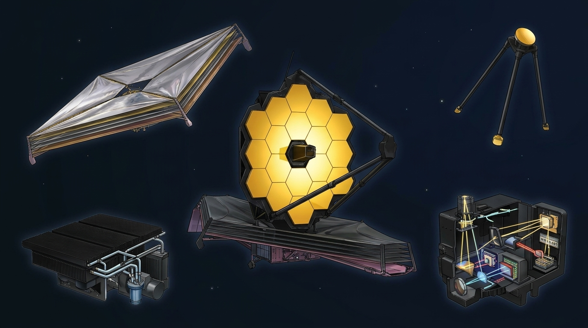

1. Escudo térmico
Ele bloqueia o calor do sol, da terra e da luz, além de manter o telescópio sob um frio extremo.
2. Mastro secundário
Ele foca a luz para os instrumentos.
3. Espelho de Ouro
Ele é o segundo elemento ópitico reflexivo em um Telescópio seleto.
4. Radiador Criogênicos
Ele resfria os instrumentos, transferindo o calor para o espaço.
5. Sensores NIRCam(Near-InfraRed Camera)
Ela captura imagens no infravermelho e alinha os espelhos.